Drukkerij voor Utrecht & Culemborg
Drukwerk met een familienaam.
Van het eerste ontwerp tot de doos bij je voor de deur. Wij doen het allemaal onder één dak, en jij houdt één vast aanspreekpunt.
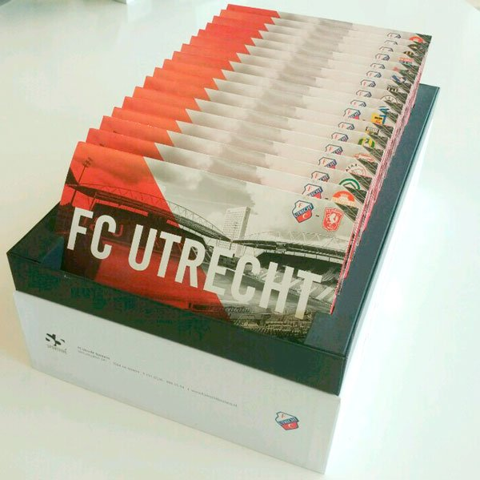
Wat mag het zijn?
Folders, kaarten, visitekaartjes, brochures, kalenders, briefpapier, posters. Zwart-wit, full colour, steunkleuren of goudfolie. You name it, we print it.
Staat het er niet bij? Bel even, dan kijken we wat er kan.
Huisstijl
Visitekaartjes, briefpapier, enveloppen, stickers, folders, brochures en mappen.
Presentatie
Posters, nieuwsbrieven, menukaarten, roll-up banners, showborden op standaard, ringbanden en presentatiemappen.
Familie
Trouwkaarten, geboortekaarten, kerstkaarten en bedankkaarten. Ook als het ingewikkeld wordt, met boorgat of bijpassende enveloppen.
Binnen- en buitenreclame
Vlaggen, banners en stickers.
Kleding en textiel
T-shirts en truien, bedrijfskleding, petten en tassen.
Concept & design
Nog geen ontwerp? We denken met je mee en zorgen dat je drukwerk de juiste uitstraling krijgt, creatief of juist commercieel.
Vers van de pers.
Een greep uit het drukwerk dat bij ons over de tafel ging.
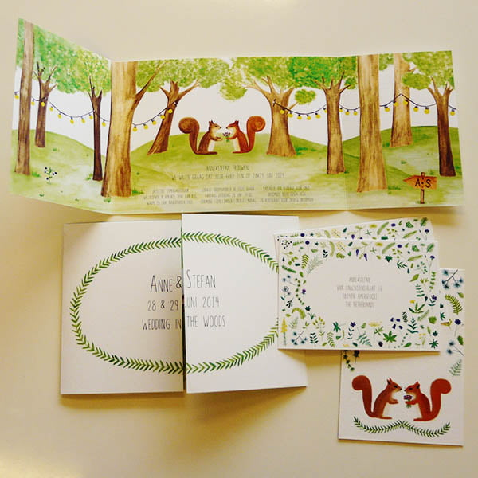
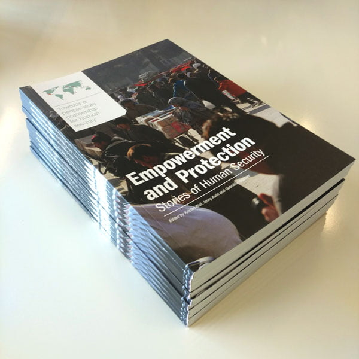
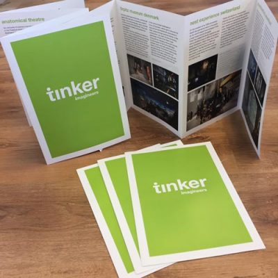
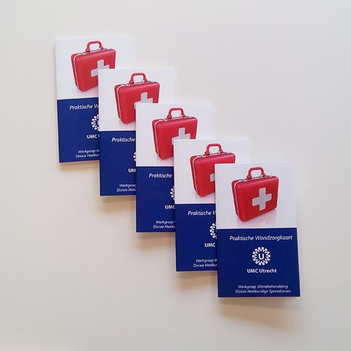
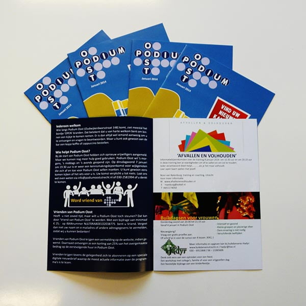
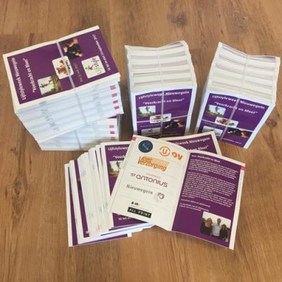
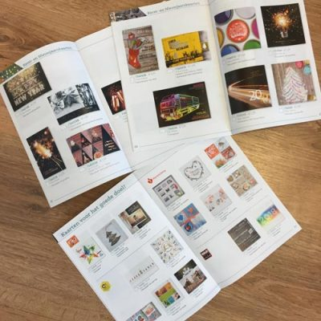
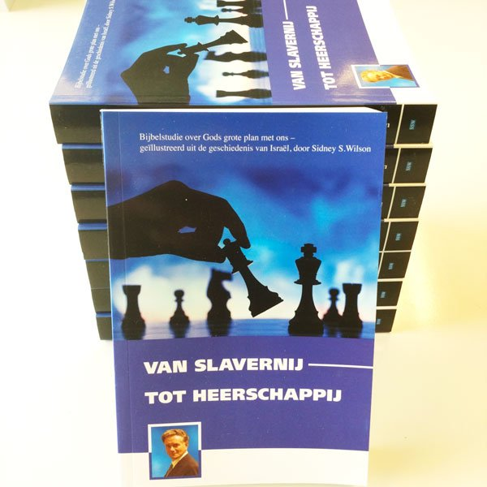
Duizend stuks of vijftig? Allebei goed.
Grote oplage
Offset drukken
Op onze offsetpersen drukken we grote oplagen in topkwaliteit. Van één PMS-kleur tot full colour, met een steunkleur of een goudfolie als je wilt. Voor bedrijven en overheidsinstellingen, maar net zo goed voor zzp'ers en particulieren.
Kleine oplage
Digitaal printen
Een kleine oplage visitekaartjes, flyers of een proefschrift? Onze digitale printers leveren snel en voordelig, in kleur en in zwart-wit, met de kwaliteit van drukwerk. Je kunt er zelfs brochures mee personaliseren.
En daarna maken we het af.
Na het drukken volgt de afwerking. Alles wat je drukwerk nodig heeft om het eindproduct te worden dat je voor ogen had:
- Spot uv-lak
- Lamineren
- Snijden
- Perforeren
- Stansen
- Rillen
- Vouwen
- Brocheren
- Binden
Mailing
Jij levert je adressenlijst aan. Wij drukken de adressen op papier of envelop en bieden de mailing aan bij de post. Het hele proces uit handen.
Voorraad
Omdat we weten wat bij jou snel loopt, drukken we op tijd bij. Je komt niet tekort en betaalt niet voor opslag van wat je nog niet nodig hebt.
Netjes voor het milieu
We drukken standaard op FSC-gecertificeerd papier, PEFC-papier kan ook. Met milieuvriendelijke inkt en energiezuinige apparatuur.
Van vader op zoon: de familie Sap.
Bij ons spreek je de mensen die je drukwerk ook echt maken. Je hebt één vast aanspreekpunt dat zorgt dat alles vlekkeloos verloopt.
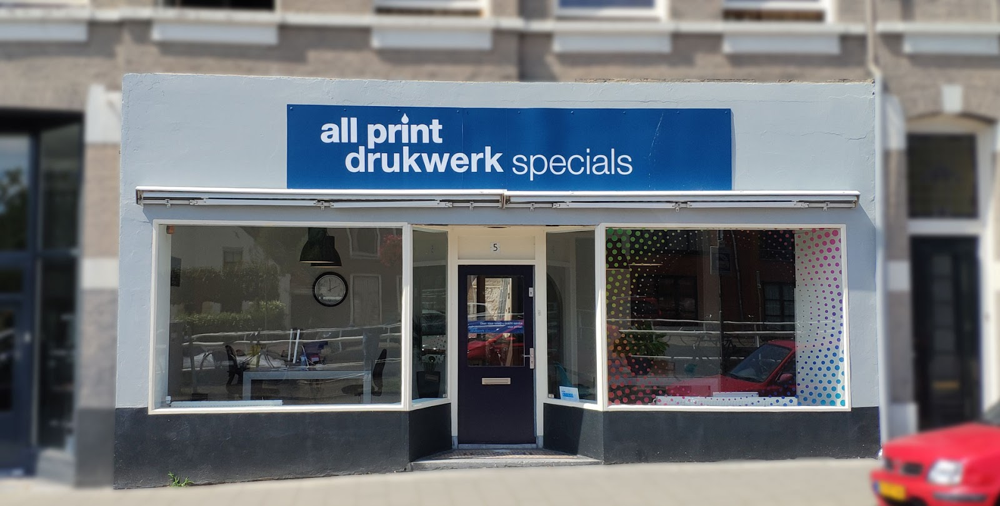
-
Na de oorlog
Kort na de Tweede Wereldoorlog wordt de drukkerij opgericht, een van de oudste van Culemborg en Utrecht.
-
1985
Kees neemt de drukkerij over, na jaren als bedrijfsleider bij grote drukkerijen. Hij vindt dat een drukkerij meer moet doen dan drukken: vakkundig advies en maatwerk. All Print groeit uit tot een begrip in de regio.
-
De eerste computer
Zoon Ralph, opgegroeid tussen de persen, schaft de eerste computer aan. Hij leert het vak van zijn vader en wordt specialist in papier en papierbewerking.
-
2006
Ralph neemt het stokje over, met zijn vader nog altijd actief in de zaak. Hij introduceert digitaal printen: voordeliger en sneller voor kleine oplagen.
-
Vandaag
Een fullservice drukkerij met een modern machinepark. Concept en design, al het druk- en printwerk en de distributie. Alles onder één dak.
Wat klanten over ons zeggen.
"Bij drukkerij All Print hebben wij héél veel bedrijfsdrukwerk besteld. Brochures, briefpapier, bedrukte enveloppen, contracten, facturen. Waarom? Omdat wij er héél tevreden over zijn. Vriendelijke en behulpzame mensen staat voor de familienaam Sap."
"Wij doen al 30 jaar zaken met de Familie Sap. Altijd correct en vooral ook snel als je om iets verlegen zit. Wij bevelen hen van harte aan."
"Prima contact en altijd snelle service en vriendelijke benadering. Ook met last minute opdrachten werken ze mee. Een keer een druk niet helemaal in orde dan bieden ze een oplossing of de keer erna een korting. Wij zijn blij met All Print!"
"Ondanks onze complexe vraag mbt trouwkaarten hebben we precies gekregen waar we naar op zoek waren. Goed papier, mooie drukkleuren en zelfs een boorgat en enveloppen erbij gekregen. Totale service met een goede communicatie en hulpvaardige mensen. Dank!"
Even bellen?
Vertel wat je wilt laten drukken, dan denken we mee over papier, oplage en afwerking. We komen ook graag vrijblijvend bij je langs.
030 231 2405- info@drukkerijallprint.nl
- Adres
- Noteboom 67
4101 WS Culemborg - Openingstijden
-
Maandag t/m vrijdag 09:00 - 17:00 Zaterdag en zondag Gesloten
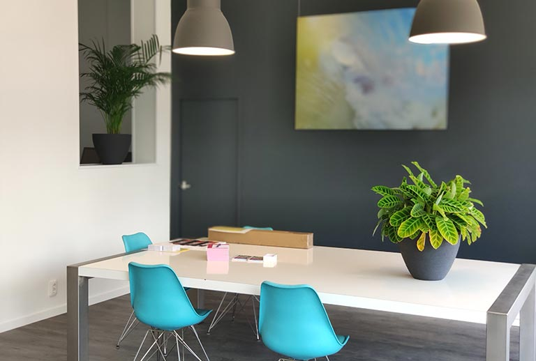